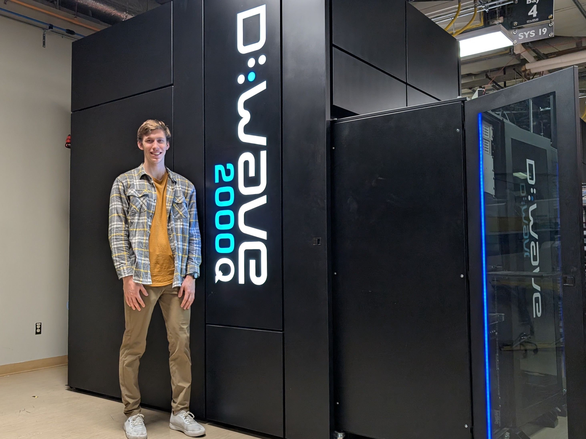
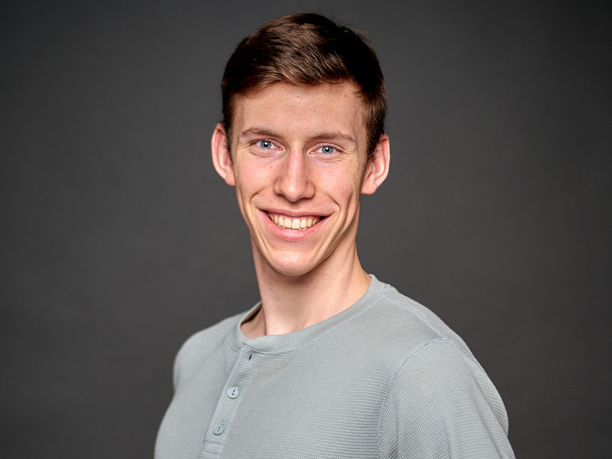

Professional History
Rocket Lab
Avionics Intern – Neutron Avionics Systems
May 2025 – Aug 2025 | Auckland, NZ
Neutron Avionics Systems
I worked directly on the Neutron rocket program, focusing on the electrical systems of the vehicle. My role involved sourcing aerospace-grade components and designing and manufacturing the harnesses that allow for testing of the ground station equipment and the rocket flight hardware.
Key Achievements
- Designed, tested, and manufactured electrical harnesses for avionics flight hardware.
- Sourced and purchased aerospace-grade connectors for Neutron rocket and built ground station cables.
- Developed wire harnessing diagrams and cable routing instructions for technicians.

D-Wave Systems
Mechatronics - Lab Operations Engineering Co-op
May 2024 – Dec 2024
Quantum Automation
I fully automated a magnetic screening system utilizing SQUIDs (Superconducting Quantum Interference Devices) to detect nano-tesla magnetic fields. This involved operating cryogenic equipment, creating custom PCBs, developing control software, and coding a real-time UI.
Key Achievements
- Designed custom PCBs for sensor integration with LabJack.
- Developed firmware for motor control based on pressure and light sensor inputs.
- Coded a real-time UI for actuator positioning and control.
- Operated cryogenic equipment for quantum processor testing.

DarkVision Technologies
Mechanical and Mechatronics Engineering Co-op
Jan 2023 – Apr 2023
Role Overview
Responsible for creating installation and testing apparatus for downhole and pipeline ultrasonic imaging tools. I utilized Tormach CNC machines to fabricate custom parts to GD&T standards.
Key Projects
- Alignment Jig: Designed and fabricated a jig to ensure precise alignment during the assembly of ultrasonic imaging tools.
- Rotary Odometer: Designed a prototype to track tool positioning in high temperature and pressure environments.
- Salt-Bath Testing: Laser-cut a jig to test circuit boards in high salinity solutions.
- Safety Cover: Designed a sheet metal cover for stress-testing systems.
